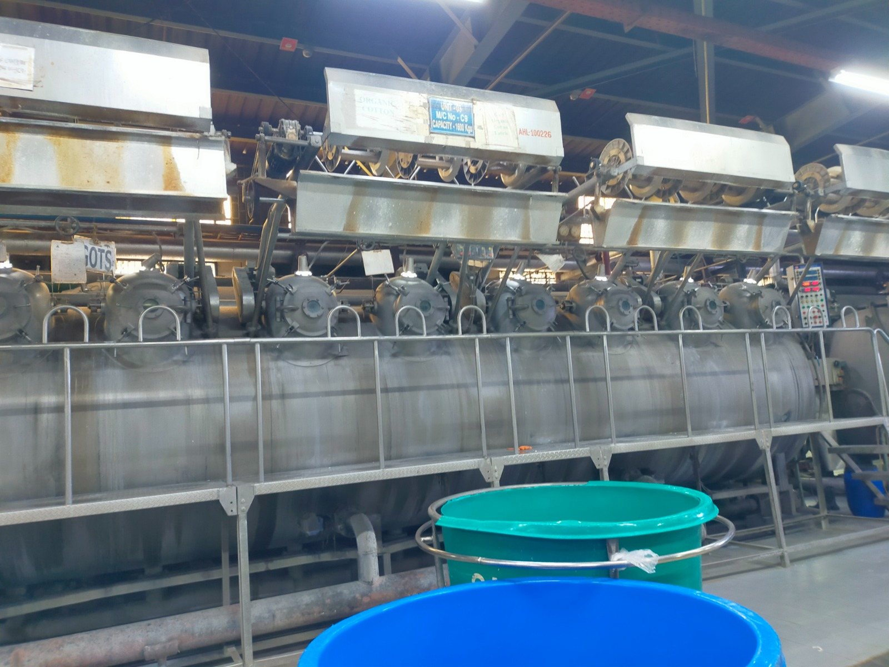
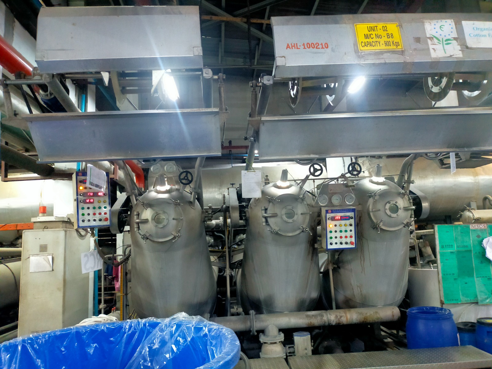
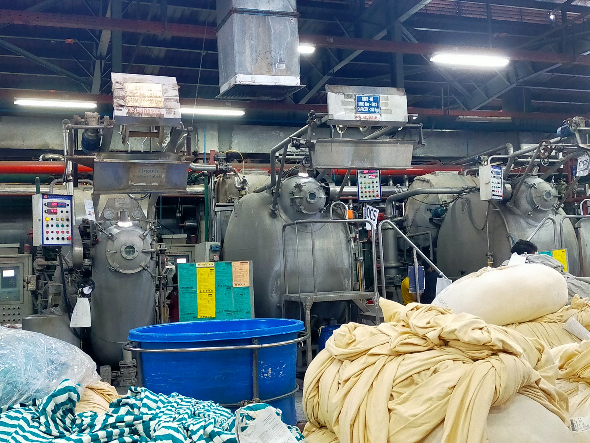

SpinningHome / Facilities
Infrastructure
Facilities & Capacity
Integrated mill infrastructure in Narayanganj — spinning, weaving, and dyeing under one roof, with corporate functions in Dhaka.

0
Spindles
0
Looms
0
Workforce
0
Yards / Year
 Weaving
Weaving
 Processing
Processing

Laboratory
Warehouse ETP & Utilities
ETP & Utilities
Spinning · Weaving · Dyeing · Finishing · Laboratory · Dispatch
Plan a Mill Visit
Buyers and auditors welcome — contact us to schedule a facility tour in Narayanganj.